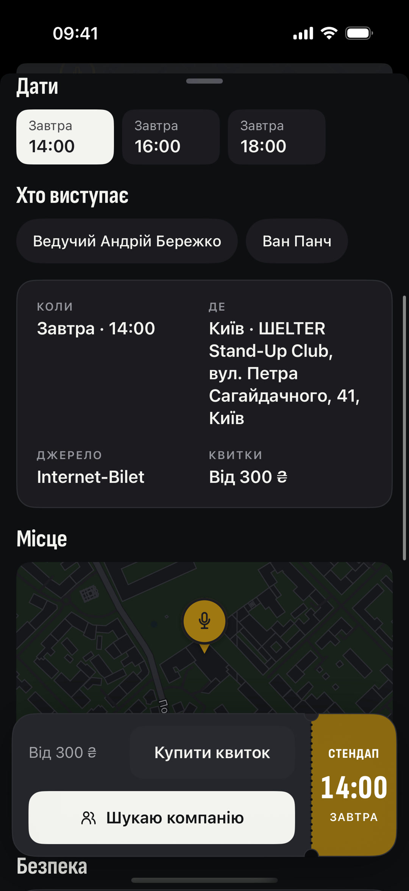

Стендап-вечір
СТЕНДАП
20:00
СЬОГОДНІ

Квиток є.
Компанії нема.
Друзі знову не можуть.
Збери тих, хто теж хоче піти.
Буде з ким.
Поряд
Є куди.Буде з ким.
безкоштовно
Apple, логотип Apple і App Store є торговельними марками Apple Inc.
Google Play і логотип Google Play є торговельними марками Google LLC.